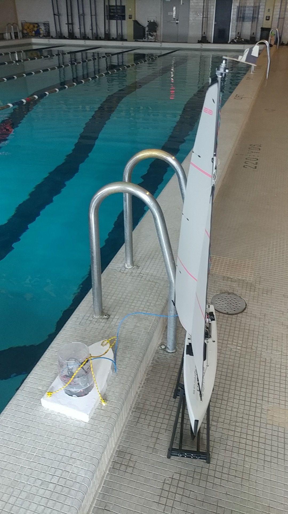
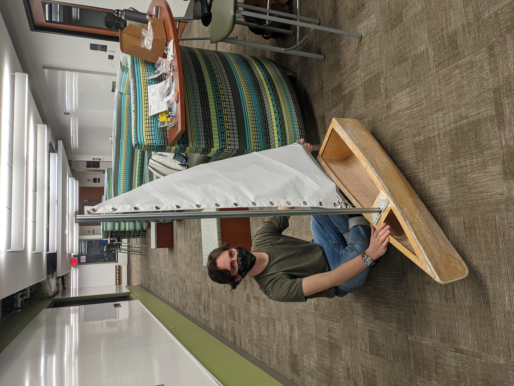
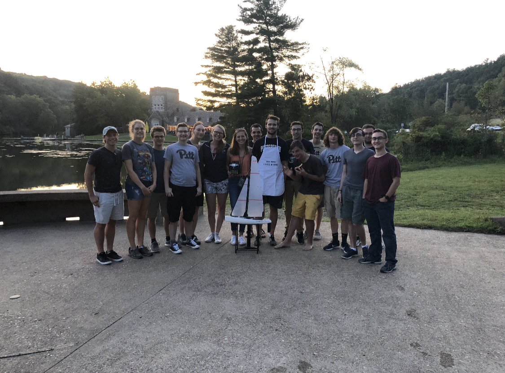

SailBot
SailBot is the name of both an autonomous sailing project and the club at Pitt that builds it.
The International Robotic Sailing Regatta is an autonomous sailing competition that has many events, including a remote-controlled fleet race, collision avoidance, search, stationkeeping, precision navigation, and endurance events, among others. The boat is designed and built by hand and the electronics and code are specified by the teams as well.
Initially run through Pitt’s Robotics and Automation Society, the first iteration was a remote-controlled catamaran with only one sail: there were improvements to be made, but the club decided against running the project the next year. But I couldn’t get the project out of my head, so I drafted an executive board and turned SailBot into its own independent club.
Started in the Fall of 2019, the team has ~22 members split into two teams, Mechanical and Controls. This iteration is a monohull with two sails and two rudders. Electronics onboard include rotary encoders, cameras, servos, DC motors, and O-drives. The COVID-19 pandemic caused the SailBot 2020 competition to be cancelled, but we plan to compete in upcoming seasons.
My contributions to the first iteration, through RAS, were fabrication assistance and general sailboat knowledge: it was the first thing I had ever truly built. Since starting Pitt SailBot Club, I have acted as head of Mech Team as well as President, getting my hands dirty with the design of the hull, rudders, and sail plan. Techniques learned and taught include fiberglass layup, mold-making and casting, sewing, laser cutting, grommeting, and use of hand tools.
